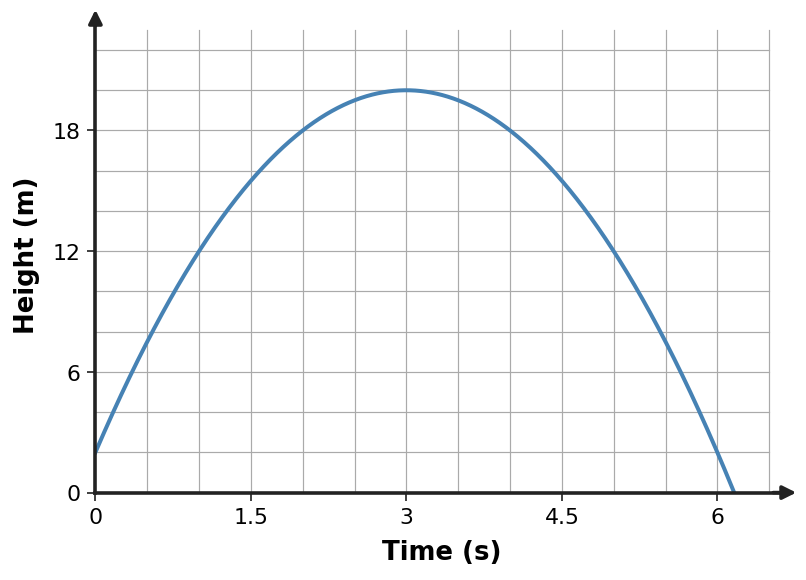

Learning Target
Students will use quadratic functions to model real-world situations and interpret maximums, minimums, and intercepts.
- I can construct quadratic models from real-world constraints, data, or key features.
- I can extend quadratic models to predict maximums, minimums, intercepts, and meaningful solution values.
- I can assess whether a quadratic model and its solutions are reasonable for the situation.
Vocabulary / Key Notation Preview
quadratic model · maximum · minimum · vertex · intercept
Sort the vocabulary. Put each term where it belongs based on what you know before reading.
| Know for sure | Recognize | Don't know yet |
|---|---|---|
What's to Come
DO NOT SOLVE IT YET.
Circle anything familiar, underline symbols, labels, conditions, data, or features that seem important, and write short notes about what you think may matter later.
A ball is launched from a platform. Its height over time is shown below.

- Estimate when the ball reaches its greatest height and estimate that height.
- Estimate when it reaches the ground.
- Which features of a quadratic model would make those quantities easiest to determine?
Teaching note: Listen for students identifying the vertex as a maximum and the positive intercept as ground contact, and for which quadratic forms might expose those features.
Let's Get Started
Skim the section. Record what catches your attention before you read closely.
| What I noticed | |
|---|---|
| What I predict | |
| What I wonder |
CLOSE-READ AND ANNOTATE
Read in short chunks. Mark the first-use vocabulary, connect sentences to equations/tables/graphs, label important features, and jot a question or connection when something changes your thinking.
I Can 1: I can construct quadratic models from real-world constraints, data, or key features.
A quadratic model connects a real situation to a quadratic function. The most useful form depends on the information given. Known zeros suggest factored form $y=a(x-r_1)(x-r_2)$, while a known vertex suggests vertex form $y=a(x-h)^2+k$.
The coefficient $a$ is determined by one additional point or constraint. After writing the form that matches the known features, substitute the extra point and solve for $a$. This keeps the model tied to all the information rather than assuming a scale factor of 1.
Tables can reveal useful features too. Symmetric outputs can identify a likely axis of symmetry and vertex, while rows with output zero reveal intercepts. Building a model is therefore a translation process: identify the features, choose the form that exposes them, then use remaining data to determine the unknown parameter.
- Which quadratic form is natural when two zeros are known?
- Which form is natural when a vertex is known?
- Why is one additional point often needed after the zeros or vertex are used?
Teacher answer: 1) Factored form. 2) Vertex form. 3) The zeros or vertex set the shape/location but not the vertical scale $a$; another point determines it.
| Known information | Useful form | Structure |
|---|---|---|
| Zeros $r_1,r_2$ | Factored | $a(x-r_1)(x-r_2)$ |
| Vertex $(h,k)$ | Vertex | $a(x-h)^2+k$ |
Use one additional point to solve for $a$ when needed.
Example 1: Build a model from zeros
A quadratic has zeros $2$ and $8$ and passes through $(0,16)$. Construct a model.
Teacher answer: Start $y=a(x-2)(x-8)$. Using $(0,16)$: $16=16a$, so $a=1$. Thus $y=(x-2)(x-8)$.
Discourse Moves
Teacher Moves
- Ask which form matches the given features before any substitution.
- Press for why another point is needed to find $a$.
- Compare a table-derived model with a feature-derived model.
Student Moves
- Choose form from zeros or vertex.
- Solve for the scale factor using a point.
- Use table symmetry/zeros as model evidence.
You Try It 1: Build a model from zeros
A quadratic has zeros $-1$ and $5$ and passes through $(0,-5)$. Construct a model.
Teacher answer: $y=a(x+1)(x-5)$ and $-5=-5a$, so $a=1$. Thus $y=(x+1)(x-5)$.
Example 2: Build a model from a vertex
A parabola has vertex $(3,20)$ and passes through $(1,12)$. Write a vertex-form model.
Teacher answer: Use $y=a(x-3)^2+20$. Then $12=4a+20$, so $a=-2$. Model: $y=-2(x-3)^2+20$.
You Try It 2: Build a model from a vertex
A parabola has vertex $(-2,-5)$ and passes through $(0,3)$. Write a vertex-form model.
Teacher answer: $3=4a-5$, so $a=2$. Model: $y=2(x+2)^2-5$.
Example 3: Build a model from a table
The table is quadratic. Identify the vertex and write a vertex-form model.
| $x$ | $y$ |
|---|---|
| $0$ | $3$ |
| $1$ | $8$ |
| $2$ | $11$ |
| $3$ | $12$ |
| $4$ | $11$ |
| $5$ | $8$ |
| $6$ | $3$ |
Teacher answer: The maximum is $(3,12)$. Checking one point gives $y=-(x-3)^2+12$.
You Try It 3: Build a model from a table
Identify the vertex and write a vertex-form model for the table.
| $x$ | $y$ |
|---|---|
| $-2$ | $0$ |
| $-1$ | $5$ |
| $0$ | $8$ |
| $1$ | $9$ |
| $2$ | $8$ |
| $3$ | $5$ |
| $4$ | $0$ |
Teacher answer: Vertex $(1,9)$; model $y=-(x-1)^2+9$.
I Can 2: I can extend quadratic models to predict maximums, minimums, intercepts, and meaningful solution values.
Once a model exists, different forms make different predictions easy to read. Vertex form highlights a maximum or minimum. Factored form highlights zeros or intercepts. Standard form may be convenient for direct substitution or algebraic operations.
Optimization asks for the greatest or least meaningful output. For a downward-opening parabola, the vertex gives a maximum; for an upward-opening parabola, it gives a minimum. In geometry, revenue, or projectile problems, the input coordinate of the vertex tells when or where the optimum occurs, and the output coordinate gives the optimal quantity.
Intercepts answer different questions. In a height model, a positive time-intercept may represent ground contact. In an area model, a zero may represent a boundary where one dimension collapses. Choosing the right form helps connect each graph feature to the question being asked.
- Which form most directly reveals a maximum or minimum?
- What do zeros/intercepts often represent in a context?
- Why might you rewrite the same quadratic into a different form before answering a new question?
Teacher answer: 1) Vertex form. 2) Times, break-even points, ground contact, or boundary values where the modeled output is zero. 3) Different forms expose different features, so rewriting can make the desired information easier to read.
| Feature | Algebraic meaning | Possible contextual meaning |
|---|---|---|
| Vertex | maximum/minimum | highest height, greatest area, best revenue |
| Zero | output equals 0 | ground contact, break-even, boundary |
Example 4: Read a maximum and intercept
The graph models projectile height. Estimate the maximum and the positive time when the projectile reaches the ground.

Teacher answer: Maximum: about $20$ m at $t=3$ s. Ground contact: about $t=6.16$ s.
Discourse Moves
Teacher Moves
- Ask which feature answers the contextual question.
- Compare vertex-form and factored-form usefulness.
- Probe what the vertex coordinates mean with units.
Student Moves
- Use vertex for optimum values.
- Use zeros for boundary/intercept events.
- Interpret features in context.
You Try It 4: Read a maximum and intercept
Estimate the maximum and the positive ground-contact time from the graph.

Teacher answer: Maximum: $18$ m at $t=2$ s. Positive ground contact is about $4.12$ s.
Example 5: Optimize a quadratic model
A farmer uses 40 m of fencing for three sides of a rectangle against a barn. If the two equal widths are $x$, write and optimize the area model.
Teacher answer: Length is $40-2x$. Area $A=x(40-2x)=-2x^2+40x=-2(x-10)^2+200$. Maximum area is $200$ m² at $x=10$ m.
You Try It 5: Optimize a quadratic model
A rectangle has perimeter 36 m. Let one side be $x$. Write an area model and find the maximum area.
Teacher answer: Other side $18-x$. $A=x(18-x)=-(x-9)^2+81$. Maximum area $81$ m² at $x=9$.
I Can 3: I can assess whether a quadratic model and its solutions are reasonable for the situation.
A mathematically correct model can still produce values that are unreasonable for the situation. Real-world models have a meaningful domain, even when the quadratic function itself is defined for every real input. Time before an event begins, negative lengths, or prices outside a stated range may not belong to the model.
Reasonableness also involves units and interpretation. A vertex at $(15,4500)$ in a revenue model means something only after the variables are named: for example, price 15 dollars and revenue 4500 dollars. The algebraic coordinates become useful only when connected back to the quantities.
Finally, models are approximations. A formula built for a certain interval should not automatically be trusted far outside that interval. Good modeling includes checking whether a solution lies in the stated domain, whether its units make sense, and whether the predicted behavior is plausible for the situation.
- Why can a real algebraic solution be invalid for a real-world model?
- What information should be attached to a vertex when interpreting it?
- Why is extrapolating far outside a model's stated domain risky?
Teacher answer: 1) It may lie outside the physical/stated domain or violate a constraint such as nonnegative time or length. 2) State both coordinates with their variable meanings and units, and identify maximum/minimum as appropriate. 3) The relationship was only justified on the modeled interval; behavior outside it may not match reality.
- Is the input inside the model's domain?
- Do the units and sign make sense?
- Does the value answer the contextual question?
- Is the model being used only where it is supported?
Example 6: Check model reasonableness
A revenue model is $R(p)=-20(p-15)^2+4500$ for prices $5\le p\le25$. Interpret the vertex and explain why values outside the domain should not be used.
Teacher answer: The vertex says the model predicts maximum revenue $4500$ at price $p=15$. The stated domain is part of the model; extrapolating outside it is unsupported by the situation.
Discourse Moves
Teacher Moves
- Ask students to check domain before accepting a root.
- Press for units on every interpreted coordinate.
- Invite a critique of an extrapolation outside the stated interval.
Student Moves
- Reject solutions outside the meaningful domain.
- Attach units and variable meaning.
- Explain why unsupported extrapolation is risky.
You Try It 6: Check model reasonableness
A height model is valid only for $0\le t\le6$ and has a mathematical zero at $t=-1$. Should that zero be reported as a physical event? Explain.
Teacher answer: No. $t=-1$ lies outside the physical domain, so it is not a meaningful event for the modeled motion.
Summary
- Choose a quadratic form that matches the known features, then use additional information to determine $a$.
- Vertex form highlights optimum values; factored form highlights zeros/intercepts.
- Interpret graph features using the variables and units of the situation.
- Check domain, constraints, and plausibility before reporting model solutions.
Common Mistakes
| Watch for | Better check |
|---|---|
| Assuming $a=1$ when the data do not justify it. | What should I check instead? |
| Using a form that hides the feature the question asks about. | What should I check instead? |
| Interpreting a vertex without naming whether it is a maximum or minimum and what the coordinates mean. | What should I check instead? |
| Reporting roots or predictions outside the model's meaningful domain. | What should I check instead? |